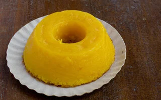
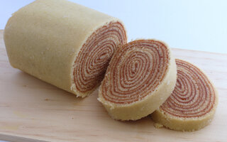
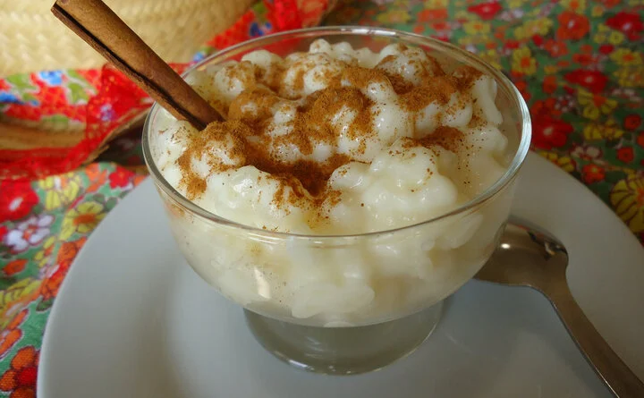

Bolo Souza Leão
Ingredientes
1kg de massa de mandioca lavada e peneirada.
2 vidros de 200ml de leite de coco mais duas vezes a mesma medida de água
800g de açúcar
3 copos americanos de água
10 gemas
1 pacote de manteiga
Uma pitada de sal
Modo de preparo
Junte a massa de mandioca com o leite de coco e o sal. A parte, faça o mel com o açúcar com os três copos de água. Leve ao fogo. Quando soltar bolhas, está no ponto certo. Retire do fogo e junte a manteiga aos poucos. Coloque as gemas uma a uma batendo bem. Junte este mel à massa que se formou com a mandioca e o leite de côco. Passe esta mistura em uma peneira fina de uma a duas vezes. Numa forma untada só com margarina acrescente a massa. Leve ao forno médio por aproximadamente 35 minutos.
Bolo de rolo
"Ingredientes
200g de manteiga
200g de açúcar
6 gemas
200 g de farinha de trigo
6 clara em neve
500g de goiabada
1/2 xícara de chá de água
Modo de preparo
bata na batedeira a manteiga com o açúcar até formar um creme e coloque as gemas e continue batendo até ficar cremoso. Junte a farinha de trigo e por último as claras em neve.
leve ao fogo a goiabada com a água e deixe amolecer até ficar como uma geleia mole.
Coloque de 5 a 6 colheres de sopa da massa espalhado bem finamente em uma forma untada. Leve ao forno pré aquecido em temperatura médica por 5 minutos aproximadamente. Vire o bolo sobre um pano úmido polvilhado com açúcar, passe uma camada bem fina da goiabada e enrole Faça o mesmo procedimento com toda massa. Dá mais ou menos 5 bolos. Por último, polvilhe com açúcar.
Canjica
Ingredientes
500 g de milho para canjica
2 litros de água
1 lata de leite condensado
400 ml de leite de coco
½ litro de leite
3 paus de canela
½ colher (chá) de canela em pó
8 cravos-da-índia
Açúcar a gosto (opcional)
Modo de preparo
Deixe a canjica de molho na água durante a noite. Cozinhe a canjica na água do molho em uma panela por cerca de 1 hora. Quando estiver macia, junte o leite condensado, o leite de coco, o leite de vaca, a canela e o cravo. Cozinhe em fogo baixo por mais uns 15 minutos, ou até engrossar. Coloque mais açúcar se quiser. Sirva quente ou fria.